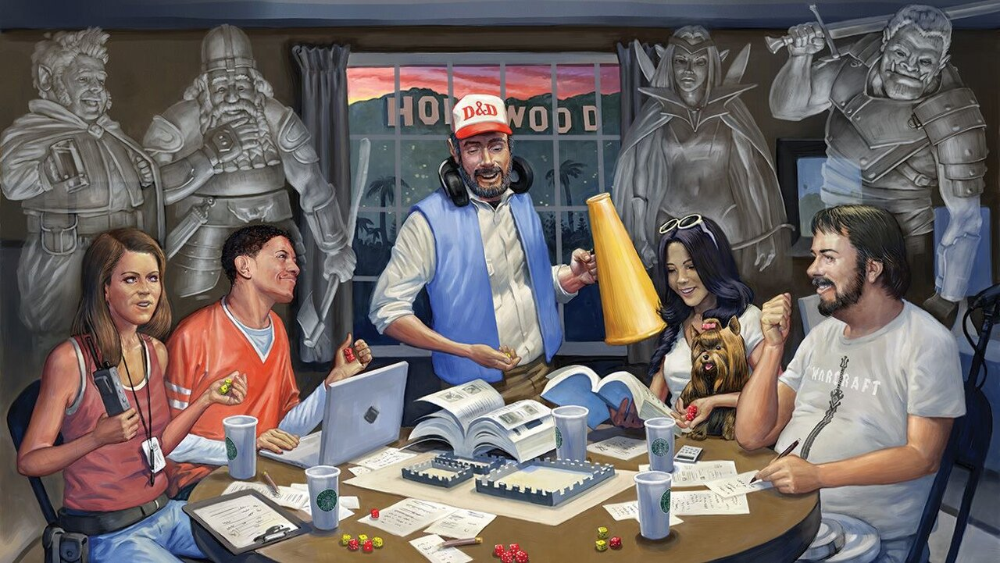

Мое хобби - это Dungeons&Dragons
Это настольная ролевая игра, суть которой заключается в совместном достижении общих целей вместе с другими игроками и Мастером во время разыгрываемого приключения.
О чем же эта НРИ? Прежде всего она об общении и фантазии.
Сидя за одним столом, игроки и мастер создают сообща историю, которая может быть наполнена чем угодно, весельем, грустью, самопожертвованием и предательством. Нет никаких пределов.
Возможно, вам стоит взглянуть на это самим

Картинка с абсолютной ссылкой
Картинка с относительной ссылкой